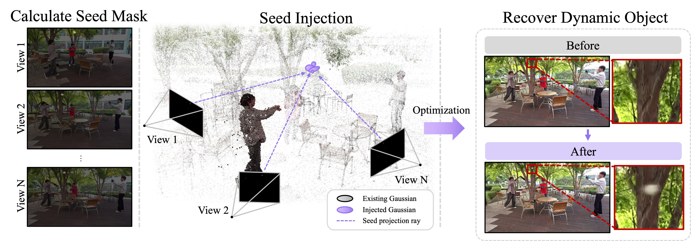
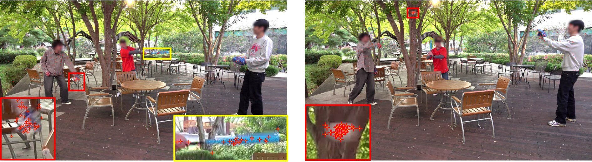
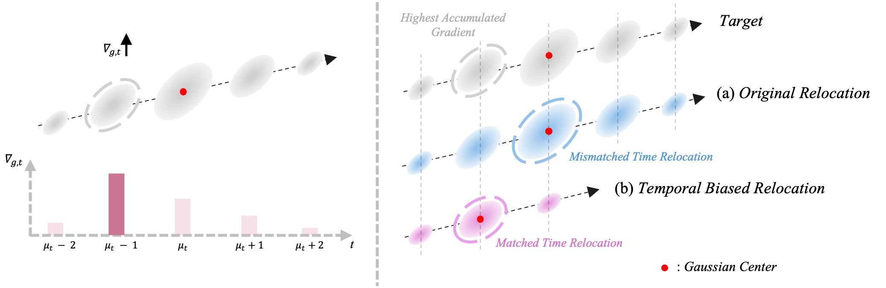

Custom - baseball
Ours
FTGS
Dynamic Gaussian representations have made high-quality, real-time volumetric video increasingly practical, yet challenging motion can still break their reconstruction: small fast-moving objects may disappear, and fine textures in highly dynamic regions are often lost. In particular, simply training longer or using more Gaussians may still fail to recover small, fast-moving objects. We argue that the key bottleneck is not representational capacity itself, but where and when Gaussian primitives are allocated. Existing allocation strategies rely on current Gaussian locations and often overlook the spatiotemporal destinations of relocated Gaussians. To address these limitations, we introduce two complementary strategies. First, Seed Injection identifies under-reconstructed dynamic regions using temporal appearance changes and reconstruction errors, and initializes new Gaussians at geometrically plausible 3D locations through multi-view observations, independent of existing Gaussian locations. Second, Temporal Biased Relocation uses time-resolved optimization signals to guide the spatiotemporal placement of relocated Gaussians. Both strategies maintain a fixed Gaussian budget without modifying the underlying representation. Experiments across multiple dynamic-scene datasets demonstrate improved reconstruction quality, particularly in highly dynamic regions, recovering small, rapidly moving objects and fine-grained appearance details.
Allocate Gaussians where and when they are needed.

Temporal appearance changes and reconstruction errors identify dynamic regions that need more support. Synchronized multi-view rays guide the placement of new Gaussians at geometrically plausible 3D locations.

Red markers show actual Gaussian injection locations in our custom dataset. Seed Injection adds support to dynamic regions with high reconstruction error, including areas that conventional relocation can miss because they lack suitable existing Gaussians.

We use timestamp-specific positional gradients to relocate low-opacity Gaussians to the time of greatest need. Each relocated Gaussian adopts the target’s 3D position at that time, with its temporal duration adjusted accordingly. This improves reconstruction in dynamic regions while also enhancing overall reconstruction quality.
If you find our work useful, please consider citing it.
@misc{roh2026dustingphantom,
title={Dusting the Phantom: Gaussian Allocation for Fading Dynamic Content},
author={Minhyeok Roh and Minseo Lee and Jun Young Jeong and Byeonghyeon Lee and Lucas Yunkyu Lee and Jaesik Park and Eunbyung Park},
year={2026},
eprint={2610.21302},
archivePrefix={arXiv},
primaryClass={cs.CV},
url={https://arxiv.org/abs/2610.21302}
}